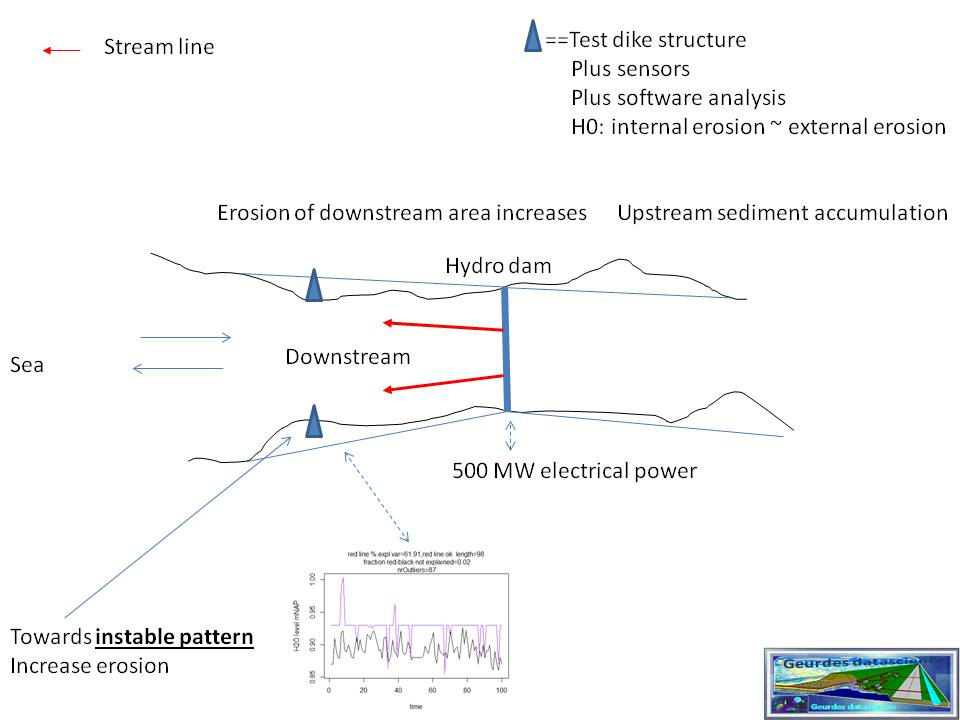

Mitigating riverbank erosion caused by a hydropower dam:
Optimal placement of hydro-kinetic turbines in the tidal flow and/or
the outflow of a hydropower dam will be investigated for simulated optimal placement in a flow.
In the well documented case of hydropower outflow, severe riverbank or
coastal erosion may occur. This is related to the blockage of sediment
transport from the upstream side of the dam to the downstream side. This resembles somewhat the blockage of sediment
caused by a breakwater.
A paradigm case is the coastal erosion demonstrated in relation to the
operation of the hydropower dams in the Volta in Ghana.
A paper written after the construction of the Akosombo dam
[5] showed that the construction
and operation of the hydropower dam at Akosombo caused the deep shoreface and coastal erosion of the Volta estuary.
A more recent study of Anthony,
[6] replicates the findings of Ly in
[5]. Both studies demonstrate the erosion
caused by the operation of the hydropower dam.
In accordance with the vision of GDS
it can be possible to mitigate the (nearby) riverbank erosion because
of lack of sediment
by placing hydrokinetic turbines in the outflow of the hydropower dam.
The erosion occurs because of the abrasive action of the water without sediment to compensate.
In the figure below (Fig 5) we see the situation when
no tidal turbines are placed in the outflow.

Fig 5
Hydropower dam outflow. Streamlines are in red.
Measuring instruments are the blue triangles. They represent the
three sensors Water level, Temperature and Pressure.
No change in streamlines through hydro-kinetic turbines in the streamlines.
Therefore we may expect increase in riverbank erosion.
As illustration, the black-purple line diagram shows many outliers in the purple line
related to the measured value black line.
This is an indication of the statistical result of the erosion monitoring
software (see the algorithm and/or
the results of the numerical tests
on the dikes: Ommelanderzeedijk and Watergraafsmeerdijk.
The eroding pattern in the panel with the black and purple lines derives from the Ommelanderzeedijk
and is for illustrative purposes only. It shows an instable pattern in the purple line (lots of outliers).
In the figure below (Fig 6) the hydrokinetic turbines are placed in the outflow of the hydropower dam.
The turbines derive their electrical energy from the strength of the flow and generate approximately 4 MW.
Their placement can also influence the direction of the outflow.
 Fig 6
Generating 4MW additional electricity.
This is done with the placement of hydro-kinetic turbines in the outflow of the hydropower dam.
The erosion measurements are the blue triangles.
The software shows a more stable pattern (less geohydraulic fragility). This means less erosion.
In figure 6 one sees a diminished eroding pattern.
This is in a certain sense an optical illusion because when no sediment is transpoterted from the upstream
side, the erosion will remain at, or around, a certain level and will show no substantial progression anymore.
Our tool is essentially looking for differentiations in patterns.
Nevertheless the two inserted diagrams are presented because they refer to
our model laboratory computations and
laboratory simulations and give a proper illustration of what is expected.
Fig 6
Generating 4MW additional electricity.
This is done with the placement of hydro-kinetic turbines in the outflow of the hydropower dam.
The erosion measurements are the blue triangles.
The software shows a more stable pattern (less geohydraulic fragility). This means less erosion.
In figure 6 one sees a diminished eroding pattern.
This is in a certain sense an optical illusion because when no sediment is transpoterted from the upstream
side, the erosion will remain at, or around, a certain level and will show no substantial progression anymore.
Our tool is essentially looking for differentiations in patterns.
Nevertheless the two inserted diagrams are presented because they refer to
our model laboratory computations and
laboratory simulations and give a proper illustration of what is expected.